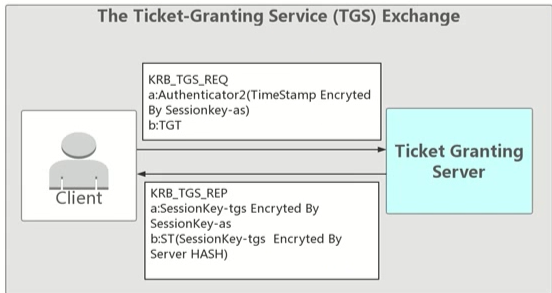

kerberos
本文介绍kerberos的相关知识以及利用攻击方法
攻击机：kali：192.168.43.30
客户机DC：win2012：192.168.8.211
客户机：win7： 182.168.8.57
1.kerberos介绍
在古希腊神话中Kerberos指的是：有着一只三头犬守护在地狱之门外,禁止任何人类闯入地狱之中。而现实中的Kerberos是一种网络身份验证协议,旨在通过密钥加密技术为客户端/服务器应用程序提供身份验证,主要用在域环境下的身份验证。
Kerberos是一种由MIT （麻省理工大学）提出的一种网络身份验证协议。它旨在通过使用密钥加密技术为客户端/服务器应用程序提供强身份验证。
Kerberos是一种网络认证协议，其设计目标是通过密钥系统为 客户机/服务器应用程序提供强大的认证服务。该认证过程的实现不依赖于主机操作系统的认证，无需基于主机地址的信任，不要求网络上所有主机的物理安全，并假定网络上传送的数据包可以被任意地读取、修改和插入数据。在以上情况下，Kerberos作为一种可信任的第三方认证服务，是通过传统的密码技术(如:共享密钥)执行认证服务的。
1.域认证所参与的角色:
- 访问服务的client
- 提供服务的server
- KDC(Key Distribution Center) = DC(Domain Controller)密钥分发中心，一般为域控制器
票据(Ticket ):是网络对象互相访问的凭证。TGT ( Ticket Granting Ticket ):入场券，通过入场券能够获得票据，是一种临时凭证的存在。
KDC负责管理票据、认证票据、分发票据，但是KDC不是一个独立的服务，它由以下服务组成:
- Authentication Service:为client生成TGT的服务，简称AS
- Ticket Granting Service: 为client生成某个服务的ticket，简称TGS。
另外还需要介绍一个类似于本机SAM的一个数据库:AD，全称叫account database，存储所有client的白名单，只有存在于白名单的client才能顺利申请到TGT。
KDC服务框架中包含一个KRBTGT账户，它是在创建域时系统自动创建的一个账号，可以暂时理解为他就是一个无法登陆的账号。在整个kerberos认证中会多次用到它的Hash值去做验证。
2.域认证粗略流程
1.client向kerberos服务请求，希望获取访问server的权限。kerberos得到了这个消息，首先得判断client是否是可信赖的，也就是白名单黑名单的说法。这就是AS服务完成的工作，通过在AD中存储黑名单和白名单来区分client。成功后，返回AS返回TGT给client.
2.client得到了TGT后，继续向kerberos请求，希望获取访问server的权限。kerberos又得到了这个消息，这时候通过client消息中的TGT，判断出了client拥有了这个权限，给了client访问server的权限ticket。
3.client得到ticket后，终于可以成功访问server。这个ticket只是针对这个server,其他server需要向TGS申请。
The Authentication Service Exchange: Client与 AS 的交互;(请求TGT)
The Ticket-Granting Service (TGS)Exchange: Client 与 TGS的交互;(请求ServerTicket)
The ClientlServer Authentication Exchange: Client 与 Server的交互。(访问)
3.域认证:
第一步:Client 与 AS 的交互
首先，客户端需要发送自己的身份信息到KDC，身份信息中起码包含用户名，KDC根据用户名在AD中寻找是否在白名单中，然后根据用户名提取到对应的NTLM Hash.
KDC此时生成一个随机字符串，叫Session Key，使用用户名对应的NTLM Hash加密Session Key，作为AS数据，使用KDC中某个用户的NTLM Hash加密Session Key和客户端的信息，生成TGT.Session Key用于客户端向TGS服务通信。
域内所有网络对象的凭证都在AD中保存.。
KDC中某个用户指的是krbtgt
具体流程:
KRB_AS_REQ
client->AS:发送Authenticator1(Client密码加密TimeStamp)
第一步client 先向KDC的AS 发送Authenticator1，内容为通过client密码 Hash加密的时间戳、ClientID、网络地址、加密类型等内容。
KRB_AS_REP
AS-> Client:发送 client密码加密的sessionkey-as和票据TGT(KRBTGT HASH加密的sessionkey-as和TimeStamp)
在KDC中存储了域中所有用户的密码HASH，当AS接收到Client的请求之后会根据KDC中存储的密码来解密，解密成功并且验证 信息。验证成功后返回给client 由 client密码HASH加密的sessionkey-as 和TGT (由KRBTGT HASH加密的sessionkey-as和Timestamp等信息)。
其中，TGT的到期时间为8小时，如果超过了8小时，还需要重新申请TGT，不能之间进入下一步获取Ticket.
- 第二步:Client 与 TGS 的交互,Client使用TGT从KDC获得基于某个Server的Ticket
客户端需要提供TGT与第一步中使用自己NTLM Hash解密出来的Session Key加密的客户端信息跟时间戳。如果假设这个数据被中间人窃取到，也无法在段时间内破解，因为KDC会校验时间戳。
KDC接到TGT与其他内容后，会首先解密TGT，只有KDC可以解密TGT，从TGT中提取到Session Key，再使用Session Key解密其他内容，解密出来的内容同TGT中的信息进行校验来确认客户端是否受信。
验证通过后，就会生成一个新的Session Key，我们称之为Server Session Key，这个Server Session Key主要用于和服务器进行通信。同时还会生成一个Ticket，也就是最后的票据了
Server Hash:这个Hash是在AD中服务器计算机的NTLM Hash。
具体流程:
Client ->TGS 发送 Authenticator2(sessionkey-as加密Timestamp)和票据TGT(KRBTGTHASH加密的sessionkey-as和Timestamp)
Client接收到了加密后的Sessionkey-as 和TGT之后，用自身密码解密得到sSessionkey-as,TGT是由KDC 密码加密，Client 无法解密。这时Client再用Sessionkey-as加密 TimeStamp和TGT一起发送给KDC 中的TGS ( TicketGranting Server )票据授权服务器换取能够访问Server的票据。

TGS-> Client 发送密文1(sessionkey-as 加密sessionkey-tgs)和票据ST(Server密码 HASH加密sessionkey-tgs)
TGS 收到Client 发送过来的TGT和Sessionkey-as 加密的Timestamp 之后，首先会检查自身是否存在Client所请求的服务。如果服务存在，则用KRBTGT密码解密TGT。一般情况下TGS 会检查TGT中的时间戳查看TGT是否过期，且原始地址是否和TGT中保存的地址相同。验证成功之后将用sessionkey-as加密的sessionkey-tgs 和Server密码 HASH加密的Sessionkey-tgs 发送给client。
第三步:Client 与 Server 的交互–双向验证
客户端向服务器请求，需要提供Ticket，Server Session Key加密的客户端信息与时间戳。Ticket客户端无法解密
服务器端通过解密Ticket解密Server Session Key(Client info + Timestamp)。
比较时间长度
具体流程:
client ->Server 发送Authenticator3(sessionkey-tgs 加密TimeStamp)和票据ST(Server密码HASH加密sessionkey-tgs)
client 收到sessionkey-as 加密的sessionkey-tgs 和Server密码 HAsA加密的sessionkey-tgs 之后用sessionkey-as解密得到sessionkey-tgs，然后把sessionkey-tgs 加密的
Timestamp和 ST一起发送给Server.
Server-> Client
server通过自己的密码解密ST，得到 sessionkey-tgs,再用sessionkey-tgs解密Authenticator3得到Timestamp，验证正确返回验证成功。
校验通过后，认证成功，该票据会一直存在客户端内存中。
4.PAC
在Kerberos最初设计的几个流程里说明了如何证明client 是client而不是由其他人来冒充的，但并没有声明client有没有访问Server服务的权限，因为在域中不同权限的用户能够访问的资源是有区别的。
所以微软为了解决这个问题在实现 Kerberos 时加入了PAC的概念，PAC的全称是PrivilegeAttribute Certificate(特权属性证书)。可以理解为火车有一等座，也有二等座，而PAC就是为了区别不同权限的一种方式。
(1)PAC的实现
当用户与KDC之间完成了认证过程之后，Client需要访问Server所提供的某项服务时，Server为了判断用户是否具有合法的权限需要将client 的 User SID等信息传递给KDC,KDC通过SID判断用户的用户组信息，用户权限等，进而将结果返回给Server，Server再将此信息与用户所索取的资源的ACL进行比较，最后决定是否给用户提供相应的服务。
PAC会在 KRB_AS_REP中AS 放在TGT里加密发送给Client，然后由Client转发给TGS来验证Client所请求的服务。
在PAC中包含有两个数字签名PAC_SERVER_CHECKSuM和PAC_PRIVSVR_CHECKSUM，这两个数字签名分别由Server端密码HASH和KDC的密码HASH加密。
同时TGS解密之后验证签名是否正确，然后再重新构造新的PAC放在ST里返回给客户端，客户端将ST发送给服务端进行验证。
(2)Server 与 KDC
PAC可以理解为一串校验信息，为了防止被伪造和串改，原则上是存放在TGT里，并且TGT由KDC hash加密。同时尾部会有两个数字签名，分别由KDC密码和server密码加密，防止数字签名内容被篡改
同时 PAC指定了固定的User SID和Groups ID，还有其他一些时间等信息，Server的程序收到ST之后解密得到PAC 会将PAC的数字签名发送给KDC，KDC再进行校验然后将结果已RPC返回码的形式返回给Server.
5.SPN
1.SPN定义
服务主体名称( SPN )是Kerberos客户端用于唯一标识给特定Kerberos目标计算机的服务实例名称。Kerberos身份验证使用SPN将服务实例与服务登录帐户相关联。如果在整个林中的计算机上安装多个服务实例，则每个实例都必预具有自己的SPN。如果客户端可能使用多个名称进行身份验证，则给定的服务实例可以具有多个SPN。例如，SPN总是包含运行服务实例的主机名称，所以服务实例可以为其主机的每个名称或别名注册一个SPN.
全称Service Principal Names
SPN是服务器上所运行服务的唯一标识，每个使用Kerberos的服务都需要一个SPN
SPN分为两种，一种注册在AD上机器帐户(Computers)下，另一种注册在域用户帐户(Users)下
当一个服务的权限为Local System或Network Service，则SPN注册在机器帐户(Computers)下
当一个服务的权限为一个域用户，则SPN注册在域用户帐户(Users)下
2.SPN格式
1 | servicelass/host:port/servicename |
3.查询SPN
对域控制器发起LDAP查询，这是正常kerberos票据行为的一部分，因此查询SPN的操作很难被检测
1、使用SetSPN
Win7和Windows Server2008自带的工具
查看当前域内的所有SPN：setspn.exe -q */*
查看指定的域：setspn.exe -T test -q */*
2、Windows系统通过SPN查询获得服务和服务实例帐户的对应关系这里举一个例子:
用户a要访问MySQL服务的资源，进行到4.tgs_reply时，步骤如下:
(1)Domain Controller查询MySQL服务的SPN
如果该SPN注册在机器帐户(Computers)下，将会查询所有机器帐户(Computers)的servicePrincipalName属性，找到对应的帐户
如果该SPN注册在域用户帐户(Users)下，将会查询所有域用户(Users)的servicePrincipalName属性，找到对应的帐户
(2)找到对应的帐户后，使用该帐户的NTLM hash，生成TGS
3、域内的主机都能查询SPN
4、域内的任何用户都可以向域内的任何服务请求TGs
综上，域内的任何一台主机，都能够通过查询SPN，向域内的所有服务请求TGS，拿到TGS后对其进行暴力破解
对于破解出的明文口令，只有域用户帐户(Users)的口令存在价值，不必考虑机器帐户的口令(无法用于远程连接)
因此，高效率的利用思路如下:
1.查询SPN，找到有价值的SPN，需要满足以下条件:
1.该SPN注册在域用户帐户(Users)下
2.域用户账户的权限很高
2.请求TGS
3.导出TGS
4.暴力破解